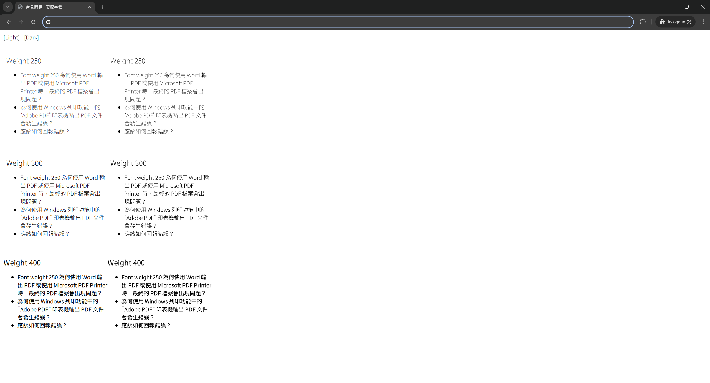

Browser
Google Chrome Version 126.0.6478.127 (Official Build) (64-bit)
Operating System
Windows 11
Screen Resolution
2560x1440
Dark mode render result
Light mode render result

Video demonstrating antialiasing switch on layout resize